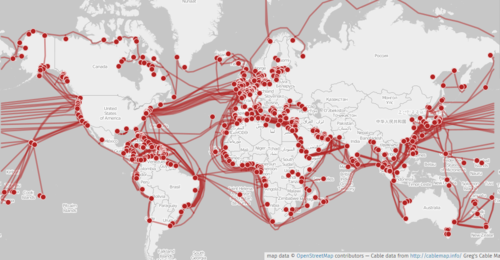

const express = require('express');
const app = express();
app.use(express.json());
app.post('/enviar', (req, res) => {
const dado = req.body.msg;
res.send('O backend recebeu: ' + dado);
});
app.listen(3000);
const express = require('express')
const app = express()
const cors = require('cors')
const PORT = 3000 // TCP
const hostname = '127.0.0.1' // localhost 127.0.0.1 IP INVÁLIDO -> SERVIDOR DE TESTE
// ------- Middleware ---------------------
app.use(express.urlencoded({extended: true}))
app.use(express.json())
app.use(cors())
// ---------------------------------------
app.get('/', (req,res)=>{
res.status(200).json({message: 'Aplicação rodando!'})
})
// -----------------------------------------
app.listen(PORT, hostname, ()=>{
console.log(`Servidor rodando em http://${hostname}:${PORT}`)
})
const express = require('express')
const app = express()
const cors = require('cors')
// PORT do TCP
const PORT = 3000
// endereço IP = 127.0.0.1 do servidor de teste
const hostname = 'localhost'
// ------------ Middleware ---------------------
app.use(express.urlencoded({extended: true}))
app.use(express.json())
app.use(cors())
// ---------------------------------------------
app.get('/', (req,res)=>{
res.status(200).json({message: 'Aplicação Rodando!'})
})
app.get('/login', (req,res)=>{
const email_bd = 'carlos@gmail.com'
const senha_bd = 123
const dados = {
email: email_bd,
senha: senha_bd
}
res.status(200).json(dados)
})
app.post('/login', (req,res)=>{
const email_bd = 'carlos@gmail.com'
const senha_bd = 123
const valores = req.body
console.log(valores)
if(email_bd === valores.email){
if(senha_bd === valores.senha){
return res.status(200).json({
message: 'login realizado com sucesso!',
nome: valores.nome,
statusLog: 'true'
})
}else{
return res.status(403).json({ message: 'Acesso não autorizado!'})
}
}else{
return res.status(404).json({message: 'Usuário não encontrado'})
}
})
// ---------------- Server ---------------------
app.listen(PORT, hostname, ()=>{
console.log(`http://${hostname}:${PORT}`)
})